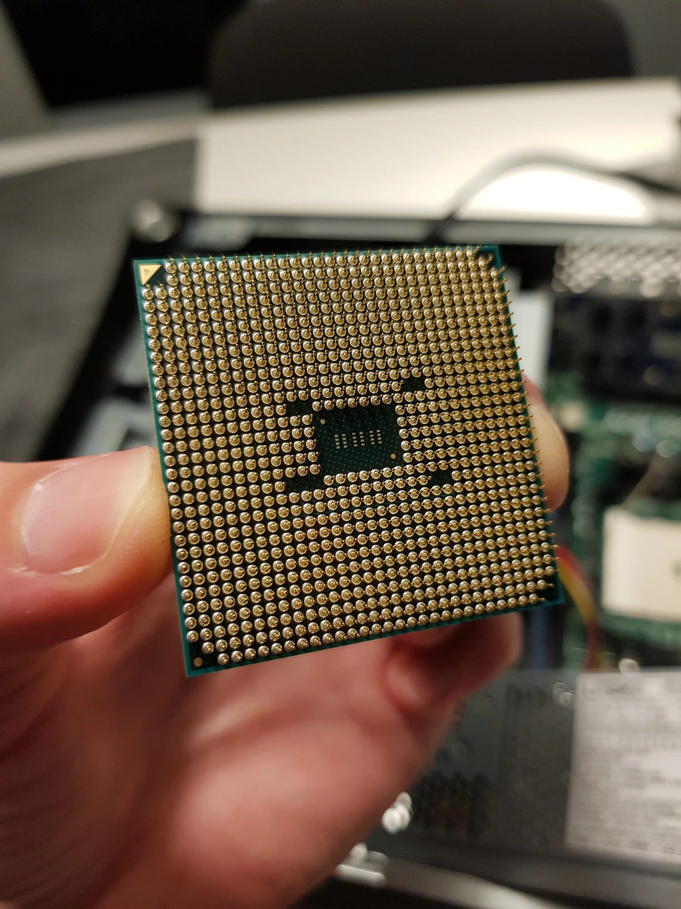

Welcome to my website! This is my tech & blog site which will be mostly focused on programming, computers and Linux but also some other things. I might throw in some off-topic posts every now and then, though. This website is free of ads, trackers and JavaScript.
About Me
I'm Frans, a computer enthusiast who enjoys programming, and I've created this site so I can easily share my thoughts and write different types of posts. I'm proficient in x86 Assembly, C, Python, Bash scripting, HTML and CSS. I also have experience with C# and Unity. My go-to operating system is Linux. I find it the best and most efficient OS you can use. I also like taking pictures, reading books and learning new things!
Feel free to donate to me using Bitcoin:
bc1qkq95xs7yrl7vdnwe0uff9609l0admrsavsp0n8
Setup
My setup (hw & sw)Recent Articles
Jan 3, 2022 — What Programming Language Should You Learn First?Dec 19, 2021 — Programming Books That I recommend
Nov 28, 2021 — Latex Introduction
Nov 15, 2021 — 21 Reasons Why I use Linux Instead of Windows
Nov 1, 2021 — Awesome Websites